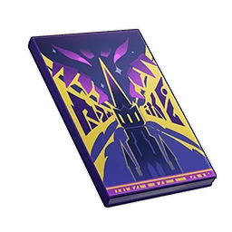

Nod-Krai · Books & Literature
Tales Carried by the Northwind
This Nod-Krai poetry collection preserves three fragments about successive Starshynas, including poems by Silvestr Petrovich Solovei and Sergei Semyonovich Mayakov.

A Fragmentary Nod-Krai Anthology
Tales Carried by the Northwind is a single-volume poetry collection about successive Starshynas, the Lightkeeper officer rank. Its own description says that calamities destroyed most of the original work; the in-game text preserves only three numbered fragments: III, VI, and VIII. The volume’s incomplete state matters: it offers glimpses, not a full institutional chronicle.
The surviving pieces name two poets. Silvestr Petrovich Solovei is credited with VI and VIII, while Sergei Semyonovich Mayakov is credited with III. Solovei is also remembered in the Lightkeeper story as one of the order’s founders. These are attributions within the collection, not proof that every poetic image records events literally.
Solovei’s Poems: Regret and the Nightingale
Fragment VI is voiced as an old, dying speaker’s confession. The speaker looks back on trusting rulers’ promises, laments that grief cannot repair the past, and turns regret into a vow: let a burning heart become a beacon that might guide someone at the farthest frontier. Its lighthouse image suits the Lightkeepers’ work, but the poem itself does not name every event behind the confession.
Fragment VIII gives the Nightingale a more triumphant, generational image: a figure brings the first light to a summit, and later generations inherit the name. Read beside the collection’s opening description and the Lightkeeper quest, “Nightingale” functions as an inherited title associated with the Starshyna, rather than only a reference to the book’s author Solovei. The precise sequence of officers and the missing poems remain unrecovered.
Mayakov’s Accusation and the Fallen Lighthouse
Fragment III stages a confrontation with Mayakov. A voice accuses him of pride, failure to call for help, and allowing the Lighthouse to fall while young companions died. Mayakov’s response is an image of him silently polishing his axe. The poem leaves his full circumstances and the details of the loss unstated; it should not be expanded into a complete battle report.
The title’s “Northwind” belongs to Nod-Krai’s far-northern setting. This collection does not identify itself with Mondstadt’s Boreas or the Wolf of the North, and its scattered fragments cannot support a continuous history of every Starshyna.
This is an original CoreGG reading guide, not an official HoYoverse article or a reproduction of the game text. Source links below identify the records used so you can check the original context.
Sources & references
Check these sources for the original game text and reference trail.